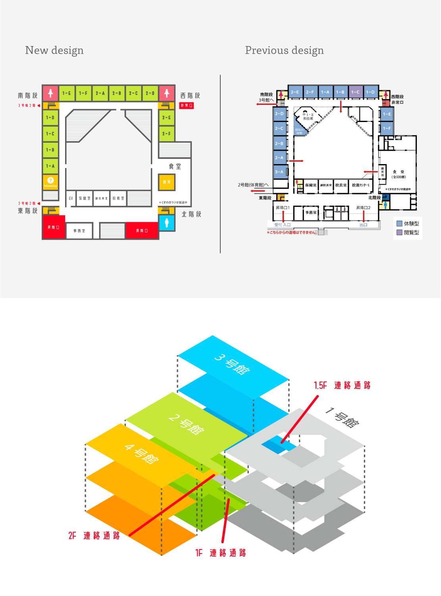

Flyer Surface.
創立41年となる母校のフライヤーを制作した。受験生とその親をターゲットに、塾や掲示板で掲出されることを想定し、強い印象を残すデザインを追求した。母校の最大の魅力は広大な敷地と豊かな自然だ。私もこの大自然に憧れて入学を決めた。本校のシンボルでもある楠を中心にし、そこから青空が広がっていくような構図にすることで、生徒が豊かな自然の中でのびのび成長する様子を表現した。また、切り絵のような質感を全体に施すことで、生徒や教員の温かみが伝わるよう工夫した。例年までのフライヤーは主に絵が中心だったため、今年はキャッチコピーも考えることにした。「自然とともに、日進月歩」は、本校のスローガン「足を大地に 手を大空に」から着想を得ている。
Flyer Back.
裏面では本校の魅力を端的にまとめた。 校風をもっとも伝えることができるのは文化祭であると考え、情報は最低限に減らし、文化祭への来場を促した。

クリアファイル.
フライヤーの表紙絵はプラスチックバッグにも使用された。学校説明会や中学受験のイベントなどで配布されている。 これは資料を入れる袋としての機能だけでなく、内側を切り取ることでそのままクリアファイルとして使用することができる。